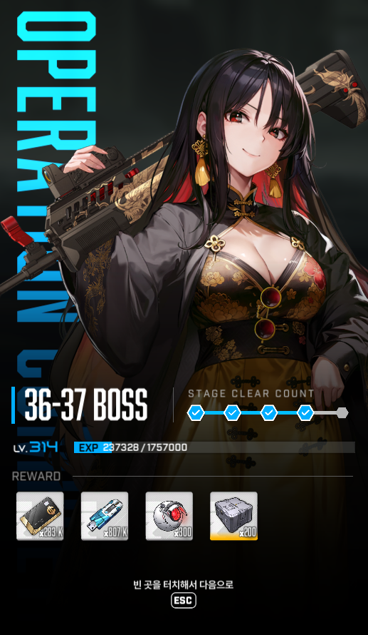
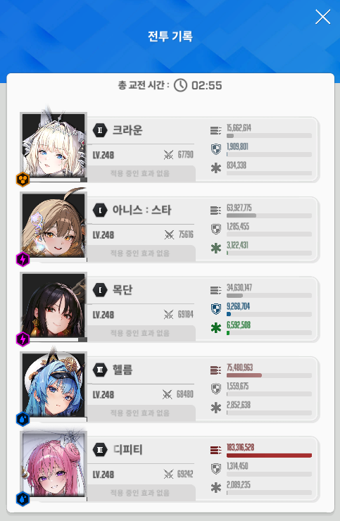

투력은 35만
좋은 공략이 이미 많긴 하지만
요즘 공략 중 수화 없는 스쿼드는 흔치 않은거 같아서 몇자 적어봄
수화 이전 수로시 쓰던 공략에는 애목단이 없기도 하고 해서
참고할게 없으니 나는 좀 막막하더라
조합은 위 스샷대로고, 편의성+생존력 때문에 아니스 썼음
독풍선 자동요격+족자패턴 빨리 넘기기에서 시간 이득이 있음
무적타이밍 실수나 버스트 밀렸을 때도 살 가능성이 생김
대신 투력페널티 때문에 캠핑 기간이 좀 늘어나긴 하는듯
- 첫버스트는 2:55
= 단일 죽창을 목단 버스트 업타임에 맞춘 타이밍
- 2:10 첫속저는 칼저지
= 여러 타이밍에 깨 봤는데 칼저지 하는 쪽이 딜타임이 좀 더 나왔음
- 족자 깰 때는 아니스
- 1:40 크라운 무적컨
= 족자패턴 직후부터 크라운 잡고 스택 관리 해야함
18중 만들어두고 대기하다가 풀버 끝나기 4초 전쯤부터 사격시작하면 댐
풀버 꺼지고 목단이 물렁해지는 타이밍을 크라운 무적으로 넘기는 개념임
- 좌우 분신 마무리는 풀버 꺼지기 1.5초 전 쯤
= 2페 브레스에 헬름버스트 맞추려고 이렇게 하긴 했는데
애초에 투력이 좀 높은 상태라 헬름 버스트 아니라도 버텨지는것 같긴 함
- 두번째 속저 (1:27쯤?)
= 버스트 오는 대로 깨서 75% 쯤에 넘긴듯
- 족자 이후엔 다시 크라운 무적컨
- 세번째 속저 (0:40 쯤?)
= 칼저지 했음
이때 칼저지 해줄 때 풀버 켜진 상태로 족자 진입 가능했고, 이게 중요했음
풀버2.5초 남기고 들어가니 아니스 평타 한방으로 족자 깰 수 있었음
- 족자 이후 부터 크라운 스택 관리 하면서 넴드 본체만 딜 (이 시점 넴드 피 151줄)
= 다음 죽창은 목단 버스트로 버티고, 버스트가 끝날 때 쯤 크라운 무적으로 넘길거임.
이걸로 넴드만 미는 딜타임 30초 정도 쓸 수 있었음
영상은 다시 보니 못해서 부끄럽네
투력도 너무 높아서 자랑거리는 아닌듯
그래도 참고가 필요한 사람 있을 수도 있으니 올림
닌케 재밋게 오래하자 안녕